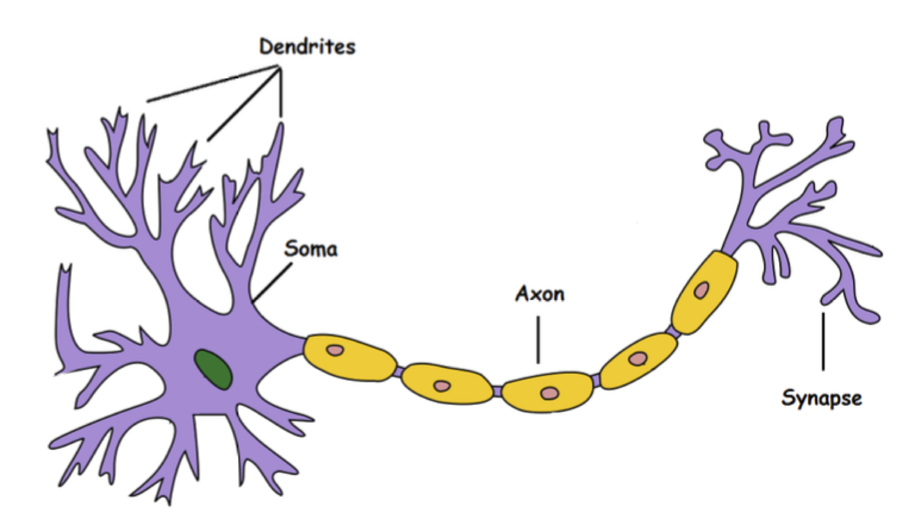
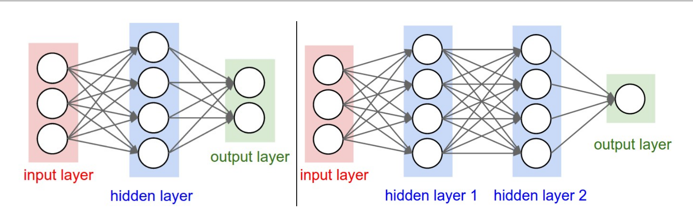
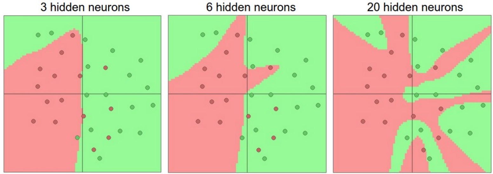
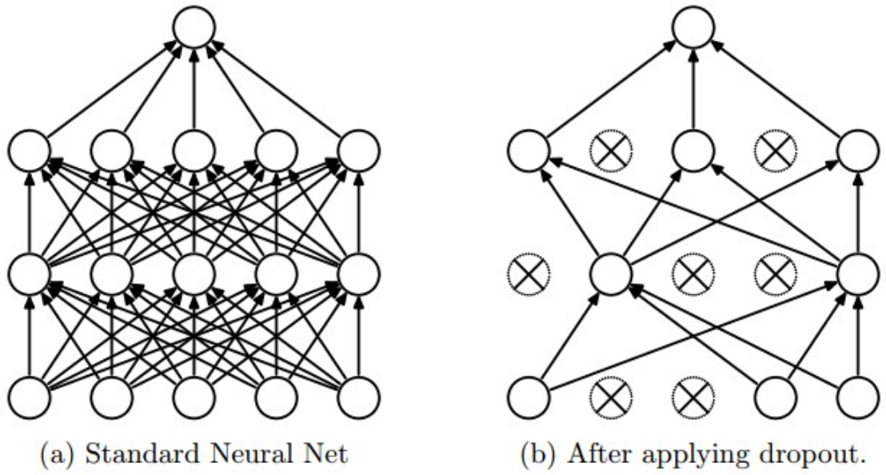
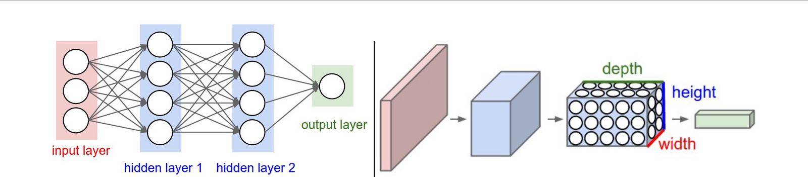
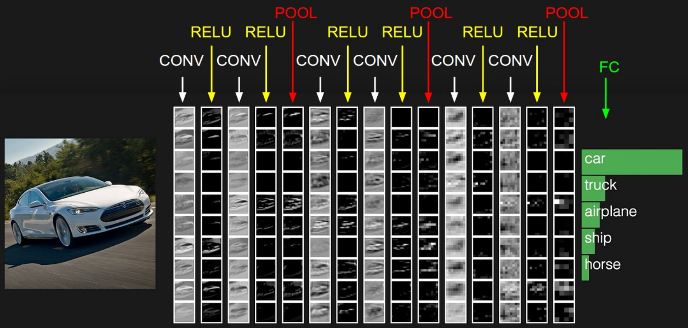
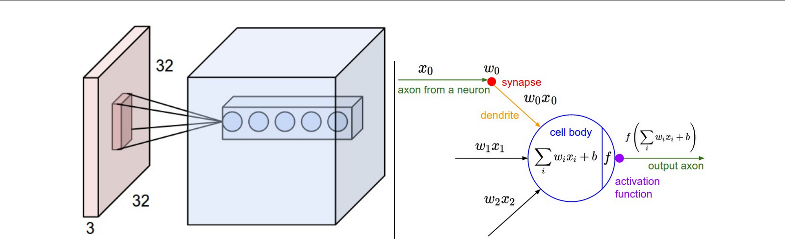
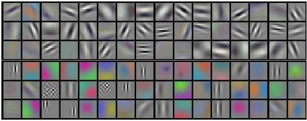

Aprendizado de Máquina
Ideia Central
- Aprender com regularidades nos dados
- Usar exemplos passados para prever o futuro
- Medir similaridade entre objetos
Exemplo Intuitivo
- Reconhecer objetos por características
- Comparar com biblioteca de exemplos
- Escolher o mais parecido
Diferentes Tipos de Aprendizagem
Supervisionada
- os pesos são ajustados minimizando o erro entre a saída esperada e a saída prevista no conjunto de dados de treinamento.
Não Supervisionada
- não utiliza saídas rotuladas. Os pesos são otimizados com base em critérios gerais, como similaridade, densidade, recompensa ou estrutura dos dados.
Aprendizado Supervisionado
K-Nearest Neighbors (KNN)
- Quadro
A Premissa da Similaridade
A ideia fundamental: "Diga-me quem são seus vizinhos e eu direi quem você é."
Se um ponto desconhecido está cercado por exemplos da classe A, a hipótese mais simples é que ele também seja da classe A.
Fronteiras de Decisão e Voronoi
Como o KNN "enxerga" o mundo? Quadro
- Imagine dois pontos no mapa. A linha que os separa exatamente no meio é o bissetor perpendicular.
- Ao adicionar vários pontos, essas linhas se cruzam formando Células de Voronoi.
- Tudo dentro de uma célula "pertence" ao ponto central daquela célula.
Como medir a "Vizinhança"?
A distância entre o ponto P e o exemplo E em n dimensões:
- Cada característica (eixo) deve ter a mesma escala.
- Problema: Se uma escala for 0-1 e outra 0-1000, a maior dominará o cálculo.
O Problema da Escala (Normalização)
O KNN é sensível a como medimos as coisas.
Uma variação de 1kg (1000 unidades) "esmagaria" uma variação de 10cm (0.1 unidades) no cálculo da distância.
- Possível solução: Z-Score ou Min-Max Scaling.
- A idéia é que cada dimensão tenha uma contribuição similar para a distância final.
Métrica de Cosseno
A métrica de distância varia de acordo com o problema.A distância euclidiana é ruim para textos.
- Um documento de 10 páginas sobre "IA" e um outro de 1 página sobre o mesmo tempo tem uma grade diferença no número de palavras.
- Mas o ângulo entre os vetores de palavras é quase zero.
Σ N · H = |N| |G| cos(θ)
O Produto Escalar foca na direção (assunto) e ignora a magnitude (tamanho do texto).
Causalidade vs. Correlação
Para encerrar a parte técnica:
- Pessoas que bebem refrigerante diet costumam estar acima do peso.
- O classificador pode dizer: "Pare de beber diet para emagrecer".
- Erro: A condição (obesidade) causou a escolha do refrigerante, não o contrário.
Outras considerações
- O que realmente importa no dado?
- Nem toda feature ajuda na decisão
Funcionamento
- Escolher K.
- Calcular distâncias.
- Selecionar os K vizinhos.
- Realizar votação majoritária.
Métricas de Distância
- Euclidiana
- Manhattan
- Minkowski
- Cosseno
Vantagens
- Simples.
- Sem fase de treinamento.
- Eficiente em bases pequenas.
Desvantagens
- Alto custo na predição.
- Sensível à escala.
- Maldição da dimensionalidade.
Conclusão e Revisão
2. Escala: Sem normalização, o impacto das características pode influenciar negativamente o aprendizado.
3. Métrica de distância: Cosseno pode ser útil, depende do problema.
3. Características: Escolher um conjunto que ajude a diferenciar bem os dados - 2D ou mais
5. Ética: Cuidado com a interpretação de causalidade.
Dúvidas?
Árvores de Decisão
Aprender regras de decisão a partir dos dados.
Conceitos
- Nós internos: testes.
- Folhas: classes.
- Ramos: resultados dos testes.
Entropia
Mede a desordem dos dados.
Entropy(S) = - Σ pᵢ log₂ pᵢ
Ganho de Informação
- Seleciona o melhor atributo.
- Reduz a incerteza.
- Base do algoritmo ID3.
Poda
- Evita overfitting.
- Melhora generalização.
Support Vector Machines
Encontrar o hiperplano de máxima margem.
Conceitos
- Vetores de suporte.
- Margem máxima.
- Classificação robusta.
Kernel Trick
- Linear
- Polinomial
- RBF
- Sigmoide
Vantagens
- Excelente em alta dimensionalidade.
- Robusto contra overfitting.
- Ótimo para conjuntos médios.
Redes Neurais
- Redes Neurais Artificiais
- CNN
- RNN
- Backpropagation
Redes Neurais Artificiais
Redes Neurais Artificiais
Modelo computacional inspirado no cérebro humano, composto por unidades simples chamadas neurônios artificiais.
- Processamento paralelo
- Capacidade de generalização
- Aprendizado a partir de dados
- Modelagem de funções complexas
Neurônio Biológico vs Artificial

- Dendritos → Entradas
- Sinapses → Pesos
- Corpo celular → Soma ponderada
- Axônio → Saída
- Quadro
Perceptron
- Primeiro modelo funcional de rede neural
- Resolve problemas linearmente separáveis
- Base das redes modernas
Características
- Entradas ponderadas.
- Função de ativação.
- Saída binária.
Modelo Matemático
y = f(z)
- xᵢ: entradas
- wᵢ: pesos
- b: bias
- f: função de ativação
- Quadro
Aprendizado
Limitação do Perceptron
- Não resolve XOR
- Necessidade de camadas ocultas
- Origem do Redes Neurais Artificiais Profundas (Deep Learning)
Redes Neurais Artificiais Profundas
O que são Redes Neurais Artificiais Profundas?
- Aprendem representações hierárquicas.
- Grande poder de generalização.
Funções de Ativação
- Sigmoid
- Tanh
- ReLU
- Softmax

Por que Não Linearidade?

Sigmoid

- Saída entre 0 e 1
- Interpretação probabilística
- Sofre com saturação
Problemas da Sigmoid
- Gradientes desaparecem nas extremidades
- Saídas não centradas em zero
- Treinamento mais lento
ReLU

- Treinamento muito mais rápido
- Não satura para valores positivos
- Padrão
Vantagens da ReLU
- Computacionalmente eficiente
- Acelera SGD
- Excelente desempenho prático
- Reduz o problema do gradiente desaparecendo
Problema da ReLU
- Gradiente zero permanentemente
- Comum com learning rates altos
Arquitetura Multicamadas

- Camada de entrada
- Camadas ocultas
- Camada de saída
Aprendizado Hierárquico
- Camadas iniciais: características simples
- Camadas intermediárias: padrões
- Camadas profundas: conceitos abstratos
Rede de 2 Camadas
- Uma camada oculta
- Uma camada de saída
Forward Pass
h_2 = f(W_2h_1 + b_2)
y = W_3h_2 + b_3
Poder de Representação
- Podem aproximar qualquer função contínua
- Desde que tenham neurônios suficientes
Mais Neurônios, Mais Capacidade

- Redes maiores modelam funções mais complexas
- Maior risco de overfitting
- Necessitam regularização adequada
Quantos Parâmetros?
- Mede a capacidade da rede
- Redes modernas possuem milhões ou bilhões
Escolhendo Arquiteturas
- Mais camadas → maior abstração
- Mais neurônios → maior capacidade
- Regularização torna-se essencial
Problemas Comuns
- Vanishing Gradients
- Exploding Gradients
- Learning Rate inadequada
- Má inicialização
Otimizadores Modernos
- SGD
- Momentum
- RMSProp
- Adam
Técnicas de Regularização
- Dropout
- L1/L2
- Early Stopping
- Data Augmentation
- Batch Normalization
Dropout

Exemplo em PyTorch
""" Vanilla Dropout: Not recommended implementation (see notes below) """
p = 0.5 # probability of keeping a unit active. higher = less dropout
def train_step(X):
""" X contains the data """
# forward pass for example 3-layer neural network
H1 = np.maximum(0, np.dot(W1, X) + b1)
U1 = np.random.rand(*H1.shape) < p # first dropout mask
H1 *= U1 # drop!
H2 = np.maximum(0, np.dot(W2, H1) + b2)
U2 = np.random.rand(*H2.shape) < p # second dropout mask
H2 *= U2 # drop!
out = np.dot(W3, H2) + b3
# backward pass: compute gradients... (not shown)
# perform parameter update... (not shown)
def predict(X):
# ensembled forward pass
H1 = np.maximum(0, np.dot(W1, X) + b1) * p # NOTE: scale the activations
H2 = np.maximum(0, np.dot(W2, H1) + b2) * p # NOTE: scale the activations
out = np.dot(W3, H2) + b3
Batch Normalization
Batch Normalization (BN) é uma técnica que normaliza as ativações de cada mini-batch durante o treinamento.
Objetivos Principais
- Acelerar a convergência do treinamento
- Permitir taxas de aprendizado maiores
- Reduzir sensibilidade à inicialização
- Estabilizar o fluxo de gradientes
Problema: Internal Covariate Shift
Durante o treinamento, a distribuição das ativações muda continuamente à medida que os pesos são atualizados.
Consequências
- Treinamento mais lento
- Gradientes instáveis
- Maior dificuldade de convergência
- Dependência crítica da inicialização
BatchNorm reduz esse efeito ao manter as ativações aproximadamente padronizadas.
Exemplo em PyTorch
A prática recomendada é inserir BatchNorm antes da função de ativação.
model = nn.Sequential(
nn.Linear(784, 256),
nn.BatchNorm1d(256),
nn.ReLU(),
nn.Linear(256, 10)
)
Vantagens
- Treinamento significativamente mais rápido
- Redução do vanishing/exploding gradient
- Maior robustez à inicialização
- Efeito regularizador moderado
- Melhor generalização
Camadas Principais
- Dense
- Convolution
- Pooling
- Flatten
- Normalization
- Softmax
Redes Convolucionais
Processamento de Imagens
Por Que Não Usar Camadas Totalmente Conectadas?
Uma imagem de tamanho 200 × 200 × 3 possui:
Conectando-a a apenas 1.000 neurônios, seriam necessários:
- Consumo excessivo de memória
- Treinamento extremamente lento
- Grande risco de overfitting
Por Que CNNs Funcionam Tão Bem?
- Invariância a translações
- Aprendizado hierárquico de características
- Uso eficiente de parâmetros
- Excelente escalabilidade
Ideias Fundamentais das CNNs
- Conectividade Local
- Compartilhamento de Parâmetros
- Hierarquia Espacial de Características
Essas propriedades reduzem drasticamente a quantidade de parâmetros treináveis.
CNN são:
- Especializadas em imagens
- Extração automática de características
- Compartilhamento de pesos
Arquitetura Típica de uma CNN

Volume de Entrada
Exemplo: imagem do CIFAR-10
- Largura
- Altura
- Profundidade (canais RGB)
Camada de Convolução
Aplica filtros aprendíveis sobre a imagem.
- F: tamanho do filtro
- S: stride (passo)
- P: padding
Ativações de uma arquitetura de ConvNet

Exemplo de Convolução - Uma imagem CIFAR-10 de 32x32x3

O 5 neurônios observam a mesma região na entrada ao longo da profundidade, mas não compartilham os mesmos pesos.
Exemplo de Convolução - Uma imagem CIFAR-10 de 32x32x3
Demonstração Interativa de Convolução
Features aprendidas

Camada de Pooling
- Reduz dimensionalidade
- Preserva características importantes
- Controlar overfitting
- É utilizada em cada camada de profundidade independentemente
Exemplo de Pooling - Entrada [224x224x64]

Exemplo de Pooling - Entrada [224x224x64]
Exemplo em PyTorch
nn.Sequential(
nn.Conv2d(3, 32, 3, padding=1),
nn.ReLU(),
nn.MaxPool2d(2),
nn.Conv2d(32, 64, 3, padding=1),
nn.ReLU(),
nn.MaxPool2d(2),
nn.Flatten(),
nn.Linear(64 * 8 * 8, 10)
)
Arquiteturas Clássicas
- LeNet (1998)
- AlexNet (2012)
- VGG (2014)
- GoogLeNet (2014)
- ResNet (2015)
Resumo
- Exploram a estrutura espacial das imagens
- Convoluções aprendem padrões locais
- Pooling reduz dimensionalidade
- Camadas densas classificam
- Base da visão computacional moderna
Redes Recorrentes
Processamento de Texto
Redes Recorrentes (RNN)
- Processam sequências
- Possuem memória temporal
LSTM e GRU
- Resolvem gradientes desaparecendo
- Excelente para séries temporais e NLP
Transformers
- Mecanismo de atenção
- Paralelização massiva
- Base dos LLMs modernos
Self-Attention
Aplicações
- Visão Computacional
- Processamento de Linguagem Natural
- Reconhecimento de Voz
- Sistemas de Recomendação
- Veículos Autônomos
- Medicina
Pipeline de Desenvolvimento
- Coleta de dados
- Pré-processamento
- Treinamento
- Validação
- Teste
- Deploy
Principais Desafios
- Grande volume de dados
- Alto custo computacional
- Escolha da arquitetura
- Interpretabilidade
- Viés algorítmico
Backpropagation - Otimização dos pesos
- Calcula gradientes.
- Atualiza pesos.
- Usa descida do gradiente.
Por Que Otimização?
- Milhões de parâmetros
- Espaços de alta dimensionalidade
- Superfícies não convexas
O Conceito de Gradiente
Gradient Descent
# Vanilla Gradient Descent
while True:
weights_grad = evaluate_gradient(loss_fun, data, weights)
weights += -step_size * weights_grad
- η: taxa de aprendizado
- Movimento na direção oposta ao gradiente
- Busca pelo mínimo da função
Intuição Visual
- Bola descendo uma montanha
- O gradiente indica a inclinação local
- Atualizações sucessivas convergem ao mínimo
Expressões Simples
- q = x + y
- f = q · z
:contentReference[oaicite:3]{index=3}
Forward Pass
y = 5
z = -4
q = x + y = 3
f = qz = -12
Backward Pass
∂f/∂q = z = -4
Regra da Cadeia
:contentReference[oaicite:4]{index=4}- dq/dx = 1
- df/dx = -4
- df/dy = -4
Backpropagation
- Executa da saída para a entrada
- Reutiliza cálculos
- Complexidade linear
Fluxo dos Gradientes
- Sinais viajam para trás
- Cada operação calcula gradientes locais
- Multiplicação pela derivada local
Portas Computacionais
- Soma: distribui gradiente
- Máximo: roteia gradiente
- Produto: troca entradas
:contentReference[oaicite:5]{index=5}
Porta Soma
:contentReference[oaicite:6]{index=6}- ∂f/∂x = 1
- ∂f/∂y = 1
- Gradiente é copiado para ambas entradas
Porta Multiplicação
:contentReference[oaicite:7]{index=7}- ∂f/∂x = y
- ∂f/∂y = x
Porta Máximo
:contentReference[oaicite:8]{index=8}- Gradiente vai apenas para o maior valor
- O outro recebe zero